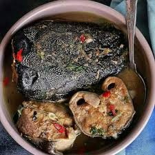

Catfish Peppersoup

Description
Catfish peppersoup, also called Point and Kill, is a spicy Nigerian delicacy made with fresh catfish and traditional herbs like uziza and uda. Its hot, aromatic broth is light yet flavorful, perfect for cold evenings or rainy days.
Loved for both taste and health benefits, it's often served as a starter or paired with yam, plantain, or rice. This soothing, peppery dish is a true comfort food and a favorite at gatherings.
Ingridient
- Fresh catfish (cleaned and cut into pieces)
- Scotch bonnet peppers (or chili)
- Onions
- Garlic and ginger (optional)
- Seasoning cubes/powder
- Salt (to taste)
- Scent leaves or basil (for freshness)
- Spices: uziza seeds, uda pods, ehuru (calabash nutmeg)
- Water
How To Preoare
- Clean the catfish:Wash thoroughly with hot water and salt or lime to remove the slimy skin. Cut into medium pieces.
- Blend spices:Grind uziza seeds, ehuru, garlic, ginger, onions, and pepper into a smooth paste
- Boil broth:In a pot, add water, the blended spice mix, uda pod, seasoning cubes, and salt. Allow to boil for a few minutes.
- Add catfish:Gently place the fish pieces into the boiling broth. Do not stir too much to prevent breaking the fish.
- Simmer:Cook on medium heat for 10-15 minutes until the fish is done and the flavors are well infused.
- Finish with herbs:Add scent leaves or basil, let simmer for 2 minutes, and turn off the heat.
back to home